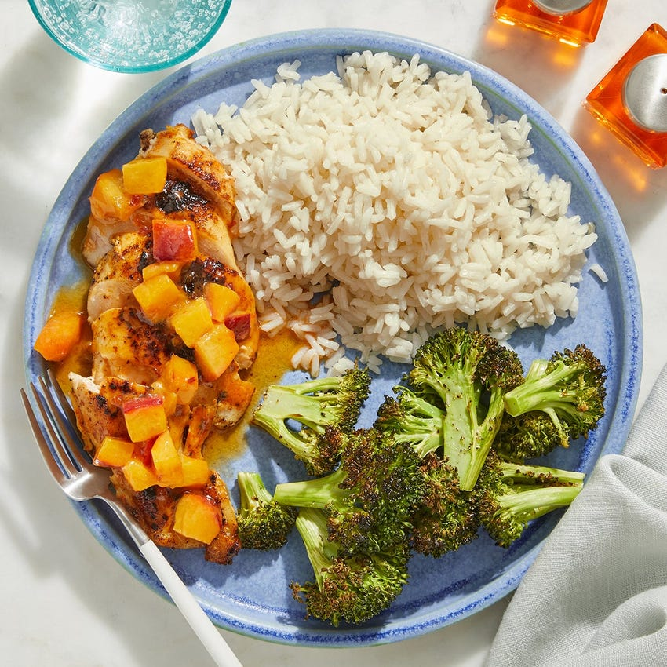

Chicken & Sesame Rice

with Sambal-Peach Pan Sauce
This bright, flavorful dish showcases one of our favorite summer ingredients: fresh peach, which we’re combining with crème fraîche, sambal oelek (a type of Indonesian chile paste), and more to create the spicy-sweet pan sauce that tops our seared chicken.
Ingredients
- 2 Boneless, Skinless Chicken Breasts
- ½ cup Brown Rice
- ½ lb Broccoli
- 1 Tbsp Sambal Oelek
- 1 Peach
- 1 Tbsp Sesame Oil
- 1 Tbsp Vegetarian Ponzu Sauce
- 1 Tbsp Light Brown Sugar
- 2 Tbsps Crème Fraîche
- 1 Tbsp Weeknight Hero Spice Blend (Onion Powder, Garlic Powder, Smoked Paprika and Whole Dried Parsley)
Instructions
- In a small pot, combine the rice, a big pinch of salt, and 1 1/4 cups of water. Heat to boiling on high. Once boiling, reduce the heat to low. Cover and cook, without stirring, 23 to 25 minutes, or until the water has been absorbed and the rice is tender. Turn off the heat; add the sesame oil and fluff with a fork.
- Meanwhile, wash and dry and the fresh produce. Cut off and discard the bottom 1/2 inch of the broccoli stem; cut the broccoli into small florets. Halve, pit, and medium dice the peach. In a bowl, combine the sugar, 2 tablespoons of water, and as much of the sambal oelek as you’d like, depending on how spicy you’d like the dish to be. Season with salt and pepper.
- In a medium pan (nonstick, if you have one), heat a drizzle of olive oil on medium-high until hot. Add the broccoli florets; season with salt and pepper. Cook, stirring occasionally, 3 to 4 minutes, or until lightly browned. Add 1/4 cup of water (carefully, as the liquid may splatter). Loosely cover the pan with foil and cook, without stirring, 3 to 4 minutes, or until the broccoli is tender and the water has cooked off. Transfer to a bowl and carefully stir in the ponzu sauce. Taste, then season with salt and pepper if desired. Cover with foil to keep warm. Wipe out the pan.
- Pat the chicken dry with paper towels. Season on both sides with salt, pepper, and enough of the spice blend to coat (you may have extra). In the same pan, heat a drizzle of olive oil on medium-high until hot. Add the seasoned chicken. Cook 6 to 9 minutes per side, or until browned and cooked through.* Leaving any browned bits (or fond) in the pan, transfer to a cutting board.
- In the pan of reserved fond, heat a drizzle of olive oil on medium-high until hot. Add the diced peach; season with salt and pepper. Cook, stirring occasionally, 2 to 4 minutes, or until lightly browned. Add the sauce (carefully, as the liquid may splatter). Cook, stirring frequently and scraping up any fond, 30 seconds to 1 minute, or until slightly thickened. Turn off the heat. Stir in the crème fraîche until combined. Taste, then season with salt and pepper if desired. Slice the cooked chicken crosswise. Serve the sliced chicken with the finished rice and finished broccoli. Top the chicken with the finished sauce. Enjoy!